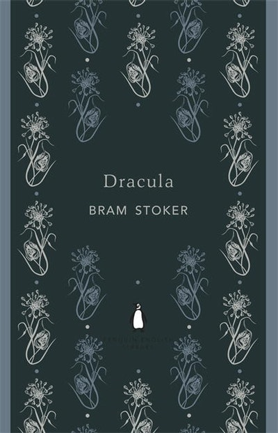

My Thoughts
I finally read Dracula — and now I fully understand why it’s considered a classic. Honestly, beyond its reputation, it’s just an incredible book to experience. The prose is surprisingly fluid, detailed, and immersive for a novel written in the 19th century. It pulls you in immediately and never really lets you go.
Rating
5 stars
Reflection
What struck me most is that Dracula isn’t a romance (so many later adaptations make it one). Instead, it’s a pure Gothic fantasy horror, steeped in atmosphere, dread, and suspense. This is storytelling at its most elemental: dark castles, mysterious strangers, creeping shadows, and the terror of the unknown. The format is one of the book’s strongest elements. Rather than being told from a traditional third-person POV, the narrative unfolds through compiled documents: diaries, letters, telegrams, newspaper clippings. Through Jonathan Harker, Mina Harker, Lucy Westenra, Dr. Seward, Van Helsing, and even glimpses of Quincy Morris, the story feels almost real — as if you’re piecing together an actual archive of events. The voices blend seamlessly, and yet you always feel the distinct personality of each character. Bram Stoker truly deserves the title “father of vampire literature.” Dracula has set the tone for every vampire story written since, but even after more than a century, it remains powerful, eerie, and original. If you love Gothic fiction, vampires, or just classics that hold up beautifully, Dracula is a must-read. For me, it’s one of the best vampire novels ever written — and one of my favorite Gothic fantasies, period.